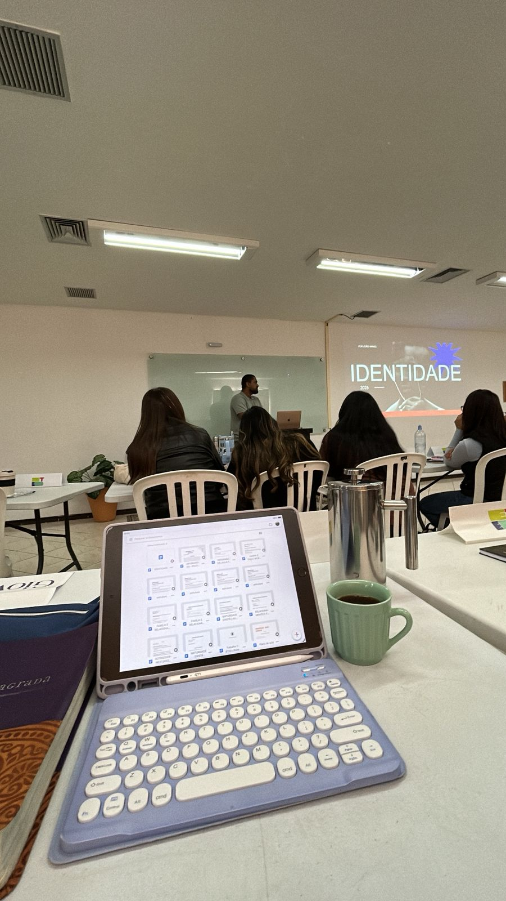
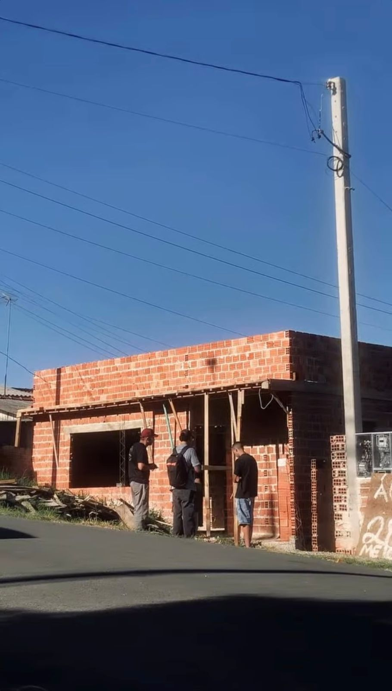
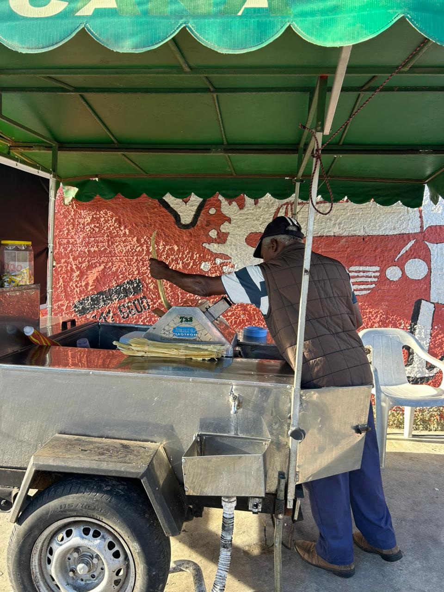
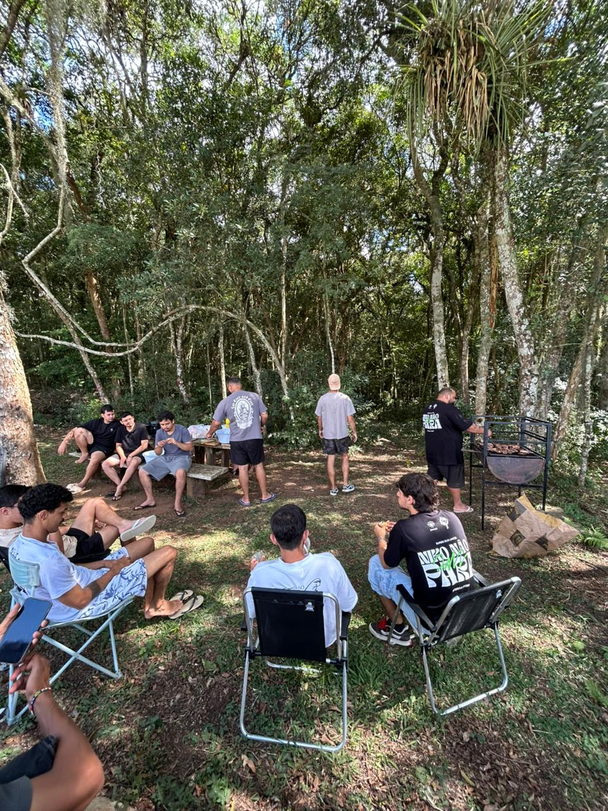
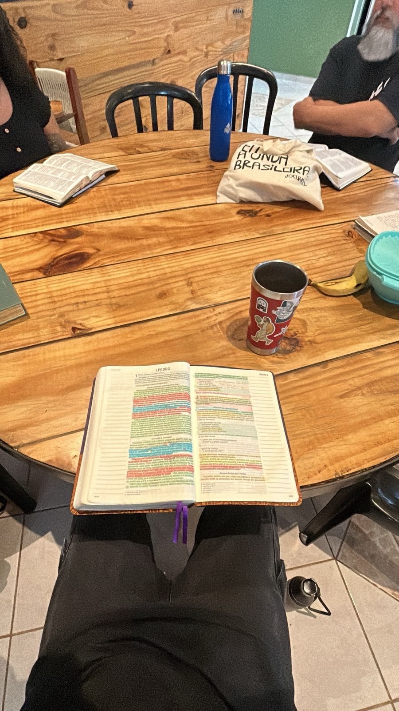

SEMANA 08
ETED
SUMÁRIO
| 1- AULA DA SEMANA | 4- RELACIONAMENTOS |
| 2- CARÁTER DE DEUS | 5- MEDITAÇÃO |
| 3- MISSÕES | 6- AUTOAVALIAÇÃO |
AULA DA SEMANA
IDENTIDADE - CHAMADO & VOCAÇÃO
JOÃO RAFAEL
CHAMADO É A RESPOSTA HUMANA Á INICIATIVA DIVINA
A AULA DE IDENTIDADE, CHAMADO E VOCAÇÃO, FORAM AULAS EXTREMAMENTE NECESSÁRIAS PARA MIM, FOI UMA SEMANA A QUAL DEUS FALOU MUITO COMIGO SOBRE AS ESFERAS QUE JÁ ESTOU INSERIDO, E ME DEU CLAREZA SOBRE PASSOS QUE TEREI QUE CUMPRIR DENTRO DE CADA UMA DELAS. ME SENTI IMPULSIONADO POR DEUS SOBRE PROJETOS E DIRECIONAMENTOS QUE ELE JÁ HAVIA ME ENTREGADO. PUDE ENXERGAR MINHAS VOCAÇÕES DE FORMA MAIS CONCRETA DE ACORDO COM O QUE FOI TRATADO EM AULA, E ENTENDI QUE PARA CADA ETAPA QUE DEUS ME DIRECIONE A FAZER, EU TEREI UM TEMPO ESPECÍFICO, DE MANEIRA SAZONAL.
DEUS É SENHOR DE TODAS AS ÁREAS

CARÁTER DE DEUS
CARÁTER E NATUREZA DE DEUS
O DEUS QUE GUIA
DEUS TRABALHOU EM MIM O SEU CARÁTER DE UM PAI QUE DIRECIONA, E GUIA OS MEUS CAMINHOS, ME SENTI AMPARADO DIANTE DESSA REVELAÇÃO MAIS CLARA, E CONSEQUENTEMENTE ESTOU APRENDENDO CADA VEZ MAIS A DESCANSAR E CONFIAR NO QUE ELE TEM PARA MIM. ENXERGUEI ESSE CARÁTER REFLETIDO EM MINHA VIDA DE MANEIRA PRÁTICA, DIANTE DAS SITUAÇÕES DIÁRIAS QUE PODERIA ME TRAZER MEDO E PREOCUPAÇÃO, EU PUDE CONFIAR E DESCASAR POR CRER QUE É ELE QUEM ESTÁ DIRECIONANDO O MEU TRAJETO E SÃO OS SEUS PLANOS QUE IRÃO PREVALECER.
ELE ME GUIA, ME DIZ PRA ONDE EU DEVO IR.
MISSÕES
OLHANDO PARA OS 'INVISÍVEIS'
📖 BÍBLIA EM CADA CASA
No sábado realizamos o Bíblia em Cada Casa, e foi um tempo muito especial, onde tive o privilégio de fazer parte do que o Senhor está fazendo em Piraquara. Foi uma experiência nova e muito edificante, pude aprender demais com a prática da comunicação, pois é uma área a qual eu tenho dificuldade, porém o Espírito Santo me capacitou e direcionou em todo o momento.

✝️ EVANGELISMO
Na quarta tivemos evangelismo, a minha equipe em específico foi para o bairro Borda do Campo. Foi um tempo muito especial, eu tive o privilégio de conversar com o Messias, um senhor de 71 anos. Ele conhecia a Deus de maneira superficial, e eu pude apresentar-lhe o Evangelho da Criação, Queda e Redenção, e por fim ele decidiu aceitar Jesus!

ESPERANÇA EM MEIO AO ORDINÁRIO.
RELACIONAMENTOS
PACIÊNCIA, RESIGNAÇÃO E CELEBRAÇÃO
FUI DESAFIADO A CRESCER NO ASPECTO DE PACIÊNCIA DURANTE ESSA SEMANA, EM ALGUNS MOMENTOS EM COMUNIDADE ACABEI NÃO CONCORDANDO COM FALAS E COMPORTAMENTOS DE OUTROS, PORÉM NÃO EXTERNEI, E CONSEGUI RESSIGNIFICAR O SENTIMENTO. TAMBÉM TIVE UM GRANDE AVANÇO NO RELACIONAMENTO COM OS MEMBROS DA EQUIPE DO PRÁTICO, E ISSO FOI ALGO MUITO BOM PARA MIM. TIVEMOS O BATISMO DE 2 ALUNOS, E AMBOS DA MINHA EQUIPE, ISSO COM CERTEZA FOI ALGO MARCANTE E ESPECIAL DEMAIS PARA MIM. NA SEXTA ORGANIZAMOS UM CHURRASCO ENTRE OS HOMENS, E FOI UM TEMPO MUITO BOM DE CONFRATERNIZAÇÃO.


MEDITAÇÃO
ELE ME ADOTOU
DEUS NOS ESCOLHEU DESDE ANTES DA CRIAÇÃO DO MUNDO, PARA QUE EU SEJA SANTO E IRREPREENSÍVEL DIANTE DA SUA PRESENÇA, EM SUA GRANDIOSIDADE ELE ME ESCOLHEU COMO FILHO, COM PROPÓSITO E DE ACORDO COM SUA BONDADE ELE ME DEU SUA GRAÇA GRATUITAMENTE O PRÓPRIO DEUS ME FAZ IRREPREENSÍVEL EM SUA PRESENÇA
EFÉSIOS 1:4-5
AUTOAVALIAÇÃO
Minha reflexão pessoal sobre essa semana:
FOI UMA SEMANA MUITO ESPECIAL EM TODAS AS ÁREAS, FINALIZAR O 2 MÊS DE ETED COM UMA SEMANA ASSIM FOI MUITO BOM! ME SENTI MUITO TRANQUILO E AMPARADO POR DEUS DURANTE OS DIAS, MAIS UMA VEZ O SENHOR ME TROUXE AINDA MAIS CLAREZA SOBRE EU ESTAR NO CENTRO DA VONTADE DELE, E AO PASSAR DOS DIAS, EU TENHO COMPREENDIDO MELHOR O QUE ELE QUER DE MIM NO HOJE E NO FUTURO.
| Aspectos de Crescimento | Pontuação |
|---|---|
| Prestatividade | 4 |
| Gentileza | 4 |
| Organização Pessoal | 4 |
| Respeito ao Limite do Outro | 3 |
| Generosidade | 4 |
| Paciência | 4 |
| Honestidade | 4 |
| Amor | 4 |